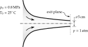

| # | Short Problem Description | Manual solution Inactive links |
Computer solution Inactive links |
|---|---|---|---|
| 1 |  Flow rate. Pressure and temperature at nozzle exit. |
q01.pdf | q01.py |
| 2 | Normal shock in nozzle, Supersonic flow at the exit plane, Minimum reservoir pressure for choking. |
q02.pdf | q02.py |
| 3 | Maximum back-pressure to choke the nozzle, Normal shock in the nozzle, Back-pressure for perfectly expanded nozzle, Supersonic flow at the nozzle exit plane. |
q03.pdf | q03.py |
| 4 | Throat and exit areas of the nozzle, Design back-pressure and temperature, Lowest back-pressure with no supersonic flow, Back-pressure with no shock waves. |
q04.pdf | q04.py |
| 5 | Maximum back-pressure for choking, Back-pressures for shock in the nozzle, Design back-pressure, Back-pressures for supersonic flow at nozzle exit. |
q05.pdf | q05.py |
| 6 | Flow rate under design conditions, Exit area of the nozzle, Design back-pressure and the temperature, Lowest back-pressure for which there is only subsonic flow, Back-pressure for normal shock wave on the exit plane, Back-pressure for no shock waves in the nozzle, Back-pressures for oblique shock waves, Back-pressures for expansion waves, Back-pressures at which a normal shock wave in divergent section. |
q06.pdf | q06.py |
| 7 | Variable area diffuser. |
q07.pdf | q07.py |
| 8 | Exit area of the nozzle, Mass flow rate at design conditions, Back-pressure when normal shock wave at exit, Back-pressures for expansion waves. |
q08.pdf | q08.py |
| 9 | Rocket nozzle thrust at sea level versus space. |
q09.pdf | q09.py |
| 10 | Throat area, exit area and exit velocity. |
q10.pdf | q10.py |
| 11 | Mass flow rate through CD passage, Mach number at the minimum area section, Velocity and pressure at the exit section. |
q11.pdf | q11.py |
| 12 | Nozzle throat area, Mach numbers before and after the shock, Nozzle area where the shock occurs, Nozzle area at exit, Density at exit of the nozzle. |
q12.pdf | q12.py |
| 13 | Mach number and the temperature at nozzle exit, Nozzle area where the normal shock wave occurs. |
q13.pdf | q13.py |
| 14 | Pressure, temperature, and Mach number at the nozzle exit. |
q14.pdf | q14.py |
| 15 | Nozzle area where the shock occurs, Mach number and pressure just before and just after the shock wave. |
q15.pdf | q15.py |
| 16 | Inlet and exit Mach numbers, Increase in entropy, Area where the shock occurs, Stagnation pressure at the exit. |
q16.pdf | q16.py |
| 17 | Exit area, Exit temperature, Exit Mach number, Area where the shock wave occurs, Pressure ratio across the shock. |
q17.pdf | q17.py |
| 18 | Pressure in the reservoir for normal shock at nozzle exit. |
q18.pdf | q18.py |
| 19 | Nozzle area at which the normal shock wave is located, Increase in entropy across the shock, Back-pressure when shock wave is located at nozzle exit. |
q19.pdf | q19.py |
| 20 | Nozzle throat area, Nozzle exit area, Temperatures upstream and downstream of the shock wave, Change in entropy through the nozzle. |
q20.pdf | q20.py |
| 21 | Mass flow rate at design conditions, Exit pressure when normal shock wave occurs in the divergent section. |
q21.pdf | q21.py |
| 22 | Mach number at exit of the nozzle. |
q22.pdf | q22.py |
| 23 | Minimum supply stagnation pressure for choking the nozzle, Mass flow rate through the nozzle, Supply stagnation pressure when normal shock wave occurs in the divergent portion. |
q23.pdf | q23.py |
| 24 | Mach numbers on each side of this shock wave, Back-pressure required to maintain the shock at a location. |
q24.pdf | q24.py |
| 25 | Throat areas of the nozzle and diffuser. |
q25.pdf | q25.py |
| 26 | Mach number, Stagnation temperature and pressure, Mass flow rate through the nozzle, Exit area, pressure, and temperature. |
q26.pdf | q26.py |
| 27 | Mass flow rate of carbon dioxide using venturimeter. |
q27.pdf | q27.py |
| 28 | Large rocket engine designed to propel a satellite launcher, Throat and exit diameters of the nozzle. |
q28.pdf | q28.py |
| 29 | Mach number, temperature, and velocity of the air at the discharge. |
q29.pdf | q29.py |
| 30 | A small jet aircraft designed to cruise at Mach 1.5, Ideal area ratio for this diffuser, Mach number to which the aircraft must be taken to swallow the normal shock wave. |
q30.pdf | q30.py |
| 31 | Fixed supersonic convergent-divergent diffuser, Mach number to swallow the shock during startup. |
q31.pdf | q31.py |
| 32 | Variable-area diffuser, Percentage reduction in diffuser throat area. |
q32.pdf | q32.py |
| 33 | Diffuser with a variable area ratio, Throat area at cruise / throat area at given Mach. |
q33.pdf | q33.py |
| 34 | Percentage increase in throat area. |
q34.pdf | q34.py |
| 35 |  Wind tunnel test section with a variable area diffuser, Idea diffuser throat area / Starting throat area. |
q35.pdf | q35.py |
| 36 | Rate of air discharge from a tank. |
q36.pdf | q36.py |
| 37 | Transonic wind tunnel testing. |
q37.pdf | q37.py |
| 38 | Pressures and Mach numbers at given cross-sectional area. |
q38.pdf | q38.py |
| 39 | Moving piston, Air velocity at exit, Piston velocity, Flow rate of discharged air. |
q39.pdf | q39.py |
| 40 | Pressure in the second reservoir. |
q40.pdf | q40.py |
| 41 | Angle of flow at discharge. |
q41.pdf | q41.py |
| 42 | Meteorite punching hole in the skin of an orbiting space laboratory. |
q42.pdf | q42.py |
| 43 | Jet engine is running on a test bed. |
q43.pdf | q43.py |
| 44 | Back-pressures for constant mass flow rate. |
q44.pdf | q44.py |
| 45 |  Nozzle area at which the shock wave occurs. |
q45.pdf | q45.py |
| 46 | Exit area of the nozzle, Mass flow rate at design conditions, Back-pressure when normal shock wave on the exit plane, Back-pressures when normal shock wave in the nozzle, Back-pressures when oblique shock waves will occur, Back-pressures when expansion waves will occur. |
q46.pdf | q46.py |
| 47 | Mach number and flow direction just downstream of oblique shock waves. |
q47.pdf | q47.py |
| 48 | Flow direction just downstream of expansion waves, Effect of expansion waves on thrust. |
q48.pdf | q48.py |